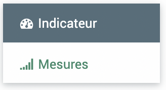
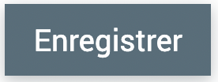

Indicateurs
 >
> 
Le module indicateur permet de suivre les indicateurs du parc. La partie principale du module se présente sous forme d’une liste d’indicateur, chaque indicateur se décline ensuite en une partie de description de l’indicateur et une partie de récapitulatif des mesures. Une mesure d’un indicateur peut être rattachée ou non à une fiche.
Depuis avril 2024 de nouvelles fonctionnalités sont disponibles pour le module indicateur : les campagnes et les groupes. Les groupes permettent de regrouper des indicateurs pour faire des agrégations, les campagnes permettent d’associer les indicateurs à une date de remplissage attendue et un référent pour un suivi du remplissage. (Il faut bien les activer en configuration et dans les rôles comme indiqué dans la documentation sur ce développement)
Une mesure d’indicateur peut donc être créée via le sous-module indicateur ou via l’onglet indicateur d’une fiche, une mesure définie dans une campagne peut être remplie via le module indicateur, l’onglet indicateur d’une fiche, le sous-module campagne, le sous-module groupe.
Avertissement
Des améliorations sont à venir sur les analyses et possibilités d’agrégations.
{kind=link}
Sous-module indicateurs
> >
Le tableau présent dans la partie « indicateur » du module reprend la liste de tous les indicateurs définis dans EVA pour le parc.
Création d’un indicateur
Pour ajouter un indicateur, il faut cliquer sur le  en bas à droite ou faire un import comme indiqué dans dans la partie Fonctionnalités générales.
en bas à droite ou faire un import comme indiqué dans dans la partie Fonctionnalités générales.
Le formulaire demande les informations suivantes :
Nom (obligatoire) : Nom de l’indicateur
Description : champs texte libre
Définition : champs texte libre
Méthode : champs texte libre
Interprétation : champs texte libre
Unité de mesure : champs texte libre
Type (obligatoire) : libre ou liste, libre = une valeur numérique, liste = un choix parmi un set de valeur (qualitatif ou quantitatif, à calibrer -> voir ci-dessous)
Opérateur de synthèse annuelle (obligatoire) : opérateur mathématique pour agréger les valeurs des mesures sur une même année -> somme, moyenne, médiane, maximum, minimum
Mots-clés et référentiels : possibilité de rattachement à des mots-clés de type « moyens, résultats, impact… » ou le référentiel évaluatif
Si le type choisi = liste, il faut définir une liste de valeur en cliquant sur . Il faut ensuite remplir la valeur et le texte associé. Cela créra une liste déroulante pour remplir la valeur lors de l’ajout d’une mesure. Par exemple :
{kind=link}
{kind=link}
{kind=link}
Avertissement
Le type « liste » n’est pas exactement qualitatif, car il fait tout de même référence à des valeurs chiffrées. On ne peut pas importer des mesures de type liste.
Il existe aussi une case à cocher « archivé » qui permet de conserver les données associées à l’indicateur mais empêche d’en ajouter des nouvelles.
Il faut |enregistrer| une première fois avant de pouvoir accéder à l’onglet mesure
{kind=link}
Les informations rentrées ci-dessus se retrouvent dans l’onglet indicateur.
Ajout d’une mesure via le module indicateur
L’onglet mesure permet d’avoir une vue sur toutes les mesures rattachées à cet indicateur, qu’elles fassent partie d’une fiche, d’une campagne ou autre. Une mesure n’est pas forcément rattachée à une fiche ou une campagne, elle peut être insérée via le module indicateur en cliquant sur . Si la mesure remonte d’une campagne elle apparaît bleutée.
Le formulaire demande les informations suivantes :
Fiche : si on souhaite rattacher la mesure à une fiche ou pas (rechercher votre fiche ou cliquer sur le
 pour afficher toutes les fiches)
pour afficher toutes les fiches)Période : intiale, intermédiaire ou finale -> au choix non contraignant sur les analyses et les dates
Type (obligatoire) : cible ou réalisé
Date de début et Date de fin/réalisée : on peut indiquer une période pour la mesure ou renseigner au moins la date de fin/réalisée si la mesure a été effectuée en une fois. La date de fin/réalisée est obligatoire pour que la mesure soit prise en compte dans les analyses
Commentaire : champs texte libre
Source : champs texte libre
Valeur : champs numérique libre ou liste pré-définie dans la partie indicateur
Territoires : On peut associer des territoires aux mesures, ce qui permet d’ajouter de la finesse dans les mesures relevées pour l’indicateur
Documents : Il est possible d’ajouter des documents aux mesures, pour cela cliquer sur puis remplir le nom du document et choisir le fichier.
{kind=link}
Avertissement
À la création de la mesure pour enregistrer votre premier document, cliquer sur « Enregistrer la mesure » une première fois, ensuite vous pourrez revenir modifier la mesure et ajouter PLUSIEURS documents en cliquant sur « Enregistrer le document » puis « Enregistrer la mesure »
Note
La notion de période (initiale, interméfiaire ou finale) a été modifiée lors du déploiement du mois d’avril 2024, elle n’est plus obligtoire car elle menait à des bugs en analyse et agrégation.
Groupe d’indicateurs
{kind=link}
Il est possible de regrouper différents indicateurs dans un « groupe d’indicateur ». L’objectif est d’agréger avec un opérateur mathématique les valeurs des mesures des différents indicateurs de ce groupe. Ainsi, on peut rassembler des sous-indicateurs dans un même indicateur par exemple les sous-indicateurs nombre d’espèces faunistiques, nombre d’espèces floristiques et nombre d’habitats prioritaires présents sur le territoire peuvent être suivi de façon indépendantes et regroupées. Le groupe peut aussi permettre de regrouper des indicateurs qui partagent la même périodicité de mesure pour faciliter le paramétrage d’une campagne (ex : début de charte, mi-charte, fin de charte).
Création d’un groupe d’indicateurs
Pour ajouter un groupe d’indicateurs, il faut cliquer sur le en bas à droite.
Le formulaire demande les informations suivantes :
Nom (obligatoire) : le nom du groupe d’indicateur
Indicateurs (obligatoire) : choisir les indicateurs qui feront partie de ce groupe (ils doivent avoir été ajoutés avant à la liste générale des indicateurs)
Opérateur (obligatoire) : opérateur d’agrégation des valeurs des mesures des indicateurs du groupe -> somme, moyenne, médiane, maximum, minimum
Cliquer sur  pour faire apparaître les onglets indicateurs et mesures.
{kind=link}

L’onglet indicateurs résume les différents indicateurs du groupe dans un tableau, et l’onglet mesures rassemblent les mesures des indicateurs du groupe. Il faut dérouler les indicateurs avec la petite flèche noire pour voir les différentes mesures.
{kind=link}
Note
Les indicateurs et mesures ne sont pas modifiables dans les groupes, il faut cliquer sur l’indicateur en question pour aller les modifier.
Avertissement
Pour l’instant les capacités d’agrégation et d’analyses des groupes n’ont pas été complètement explorées et seront complétées par un autre développement.
Avertissement
Si on ajoute uultérieurement un indicateur à un groupe, si le groupe a déjà été ajouté à une campagne, cet indicateur ne fera pas parti de la campagne
Campagne de mesures
{kind=link}
Afin de piloter le remplissage des indicateurs, il possible de créer des campagnes qui vont permettre de regrouper les indicateurs à suivre, indiquer une date et une périodicité pour le remplissage et une personne référente. Par exemple, on peut créer une campagne « Charte » pour suivre les indicateurs du dispositif d’évaluation de la charte. Ainsi on peut rattacher à cette campagne la liste des indicateurs, leurs valeurs initiales, leurs valeurs cibles, à trois ans, à mi-charte et à la fin de la charte.
Création d’une campagne de mesures
Pour ajouter une campagne, il faut cliquer sur le en bas à droite.
Le formulaire demande les informations suivantes pour la campagne en général (les informations par indicateurs seront précisés ensuite) :
Nom (obligatoire) : le nom de la campagne
Responsables (obligatoire) : choisir le ou les utilisateurs qui seront responsables de toute la campagne par exemple le/la chargé(e) de mission évaluation
Date de début et date de fin (obligatoire) : les dates de la campagne globale par exemple les dates de la charte
Description : un champ texte pour préciser la campagne
Cliquer sur pour faire apparaître les onglets indicateurs et mesures.
{kind=link}
Ajout des indicateurs d’une campagne
L’onglet indicateurs résume les différents indicateurs de la campagne dans un tableau indiquant les référents et l’occurence de récolte de la donnée pour la compagne.
Il est possible d’ajouter des indicateurs un à un ou en groupe via les boutons d’ajout respectif.
{kind=link}
Le formulaire demande les informations suivantes pour chaque indicateur ou groupe :
Indicateurs (obligatoire) : à sélectionner depuis la liste des indicateurs qui peut s’afficher via le
Référents (obligatoire) : choisir le ou les utilisateurs qui seront responsables de cet indicateur ou de ce groupe en particulier
Date unique ou de début (obligatoire) : soit un indicateur est à renseigner une seule fois et dans ce cas on indique une date unique, soit il est à renseogner à une fréquence en partant d’une date de début à renseigner dans ce champs
Fréquence et Périodicité : ces champs sont à remplir ensemble pour indiquer la périodicité de renseignement des mesures de l’indicateur, par exemple si on souhaite le remplir tous les trois ans, il faudra indiquer 3 pour fréquence et an(s) pour périodicité
Collecte des mesures des campagnes
L’onglet mesures rassemblent les mesures des indicateurs de la campagne. Il faut dérouler les indicateurs avec la petite flèche noire pour voir les différentes mesures.
Les mesures sont pré-créées avec les informations renseignées dans l’onglet indicateurs, c’est à dire que chaque mesure attendue est déjà créée et la valeur indiquée est « nr » pour « non remplie ». Il est ensuite possible de les modifier, de les rattacher à des fiches, des territoires en les modifiant « in-line » via  ou en cliquant sur
ou en cliquant sur  en fin de ligne.
en fin de ligne.
Un ratio est calculé automatiquement entre la valeur cible et la valeur réalisée. Lorsque l’on ajoute un valeur réalisée il faut bien remplir la « date de fin / réalisée ».
Il est possible ensuite de faire des filtres et des requêtes pour sélectionner toutes les mesures dont on est référents par exemple et qui ont une date attendue proche -> voir la partie sur les filtres et requêtes
Grâce à ces requêtes, il est possible de paramétrer des alertes, pour recevoir des mails automatiquement lorsque l’on doit remplir des mesures d’une campagne par exemple -> voir la partie sur les alertes indicateurs
Avertissement
Pour l’instant, il faut faire attention lors de la modification de mesure de campagnes hors des campagnes (fiches et indicateurs). Car dans les campagnes, les mesures « cibles » et « réalisées » sont regroupées mais elles ne le sont pas dans les autres modules (indicateurs et fiches). Donc les champs dates, commentaires et sources sont unifiés dans les campagnes mais dans les autres modules. Si on remplit les champs commentaires, sources ou dates dans les mesures indicateurs avec des données différentes entre cible et réalisé, puis on modifie la mesure dans la campagne, les données vont être unifiées sur les deux lignes et donc il y a une modification non voulue par l’utilisateur qui peut faire perdre des informations.